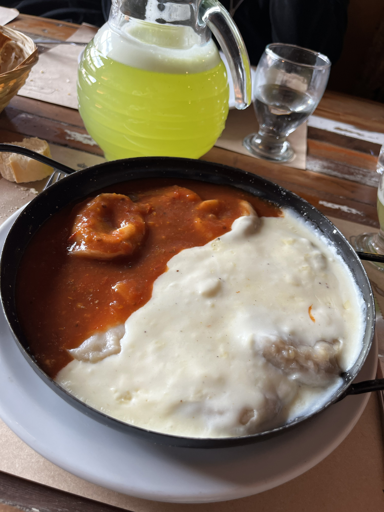

Bodegón de All Boys
Está dentro del club All Boys, en pleno Floresta, y se nota: camisetas en las paredes, banderines y mesas largas llenas de familias y amigos. La carta es de bodegón clásico, con minutas, pastas caseras y milanesas para compartir entre dos o tres personas.
¿Por qué visitarlo?
Porque junta dos cosas muy porteñas: el fútbol de barrio y la comida abundante. Nuestra recomendación es la milanesa con tallarines y un flan con dulce de leche de postre.
Ubicación: Mercedes 1951, Floresta, CABA
Horario: Martes a domingo de 12:00 a 16:00 y de 20:00 a 00:00 hs
Medios de pago: Consultar en el local (muchos bodegones prefieren efectivo)
Redes:
Instagram